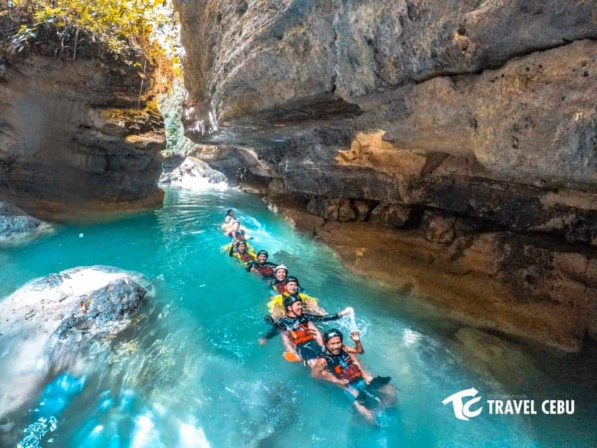

Kawasan Canyoneering
Discovering Kawasan Falls: Cebu’s Turquoise Paradise
Nestled in the lush greenery of Badian, Cebu, Kawasan Falls is a natural gem that continues to captivate the hearts of travelers from around the globe. Known for its crystal-clear waters and serene ambiance, this multi-tiered waterfall is a must-visit destination for anyone seeking adventure, relaxation, or a little of both.
The Allure of Kawasan Falls
What sets Kawasan Falls apart is its stunning turquoise pools that look almost too perfect to be real. The main cascade flows into a spacious, natural pool ideal for swimming, making it a haven for nature lovers and photographers alike. The soothing sound of rushing water combined with the verdant surroundings creates an atmosphere of pure tranquility.
A Multi-Tiered Wonder
Kawasan Falls isn’t just one waterfall—it’s a series of three cascading tiers, each offering a unique experience
1. *First Level*: The largest and most popular, featuring a wide pool perfect for swimming and bamboo rafting.
2. *Second Level*: A smaller, quieter cascade with fewer visitors, ideal for those seeking peace and solitude.
3. *Third Level*: The highest and most secluded, providing a more intimate connection with nature.
The Thrill of Canyoneering
For adrenaline junkies, Kawasan Falls offers the ultimate adventure: canyoneering. This activity takes you on a thrilling journey through the rugged terrain of Badian, involving hiking, swimming, and cliff-jumping into deep blue waters. The canyoneering route typically starts in Alegria and ends at the first level of Kawasan Falls, making for an exhilarating way to explore the area.
Getting There
Kawasan Falls is approximately 130 kilometers from Cebu City, about a three-hour drive by bus or private vehicle. Upon reaching Badian, visitors embark on a scenic 15-30 minute hike through a forested trail lined with streams and tropical plants.
Preserving the Beauty
Efforts have been made to manage tourism sustainably and preserve the falls’ natural beauty. Visitors are encouraged to minimize waste, avoid damaging the environment, and respect the local guidelines.
Tips for an Unforgettable Visit
- Wear comfortable hiking shoes or water sandals.
- Bring a waterproof bag for your belongings.
- Visit early in the morning or on weekdays to avoid crowds.
- If you’re canyoneering, always follow the safety instructions of your guide.
A Paradise Worth Exploring
Whether you’re diving into its cool, refreshing waters, marveling at its natural beauty, or seeking the thrill of canyoneering, Kawasan Falls offers something for everyone. It’s a slice of paradise where adventure meets serenity, making it one of Cebu’s most cherished attractions.
Plan your trip today and experience the magic of Kawasan Falls for yourself—it’s a journey you’ll never forget.